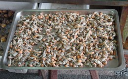

|
蝦猴是彰化鹿港的特產，常裝在小籃中兜售，當地的餐廳最常將它酥炸，加上胡椒鹽，是一道很夠味的下酒菜，然而其來源大多並非在鹿港本地，而是線西伸港一帶的大肚溪口區。早期調理方式是將蝦猴用鹽滷過，非常鹹，因此當地流傳一句諺語︰「一隻蝦猴配三碗粥」。以前是窮人家的鹹菜餚，今天因不易挖取，身價暴漲。 我們到肉粽角一帶「攏蝦猴」，除了能親自體驗「攏蝦猴」的樂趣外，也能稍微了解蝦猴的生活及生態特性。
【蝦猴的簡介】
蝦猴學名為「蝦蛄」，長相奇特，頭部像螻蛄（台語為肚猴），尾部像蝦，可能因此而得名。它是蝦蟹類的一種，主要生活在海邊多沙的泥地下，牠們會挖一條條深深長長的地道，住在沙地中。在漲潮時，牠們會沿著地道爬到洞口附近，撈取附近及水中的小生物和食物顆粒來吃。退潮時，牠們就躲在深深的洞穴內休息，深可達半公尺，等待下一次漲潮。蝦猴游泳能力非常弱，牠們長期躲在沙子中，受到周圍沙子的保護，水流太強或流動的泥沙都不是牠們能適應的環境，所以多躲在深達半公尺的沙地中。
【攏蝦猴】
當您找到適當地點後，不妨先向海邊看看，是否潮間帶有許多輛鐵牛車停在沙地上，並且有陣陣抽水馬達聲，如果有，那八成就是漁民在「攏蝦猴」了，您就可以準備下去湊湊熱鬧，來一趟感性與知性之旅。
蝦猴通常用鏟子、圓鍬挖個半死，也挖不到。有經驗的漁民們用鐵牛車載著一台台抽水馬達，馬達接上長長的水管，水管末端再接上一小段硬塑膠管。他們將硬塑膠管插入泥沙中，用抽水馬達灌入強勁水柱，使得蝦猴的洞穴內猶如突然來了「土石流」，紛紛被沖到沙地表面。到了地面後，蝦猴英雄無用武之地，行動笨拙，便一隻隻被抓進網子中。
然而海邊那麼大，漁民怎麼知道蝦猴躲在哪裡？這要歸功於漁民經驗累積及野外觀察的智慧。蝦猴的洞口，會有一些泥質，比較堅硬，因為牠每天要上來找東西吃。漁民認得這種洞穴，它比螃蟹的洞穴小。因此，只要這種特殊的洞穴一多，漁民就知道下面有很多蝦猴，鐵牛車就停在附近，開始灌水抓蝦猴。您可以在旁邊仔細觀賞，保證讓您驚嘆不已，收穫良多。
在灌蝦猴的同時，許多生活在沙地中的生物也會被沖出來，所以也可以同時觀察到各種沙地附近爭食被水灌出來的生物。
【如何抓蝦猴】
如果您想運動，並嘗試這種樂趣，可以在附近挑選一塊有許多蝦猴洞的沙地，面積大約是2公尺乘2公尺。用鏟子在中間開始挖起來，把挖出的泥土圍著旁邊。開始挖的時候，中間就有水滲出來，您一邊挖一邊踩踏，挖的深度也要有半公尺深。踩踏的作用是讓泥沙和著海水，讓海水混濁。如此這般辛勤工作半小時之後，大概也挖了一個大坑洞，這時您可以發現一隻隻蝦猴受不了污濁的泥沙，一隻隻在水面爬行，您就可以將牠們手到擒來。有人曾經在這樣面積的沙地上，抓了近2公斤的蝦猴，數量之多，令人咋舌。這就是克難式的「攏蝦猴」，全家一起來，保證讓您全家回味無窮，又可以達到瘦身的效果。不過，當您運動完畢後，記得將坑洞填平，恢復原狀。
為什麼「攏蝦猴」時，蝦猴會紛紛爬出來？這是因為牠們也和蝦蟹一樣，要用鰓來呼吸，海水被弄髒了，牠們的呼吸變得不順暢，於是紛紛向上爬，以尋找乾淨的海水。然而「攏蝦猴」後，記得將坑洞填滿，恢復原狀。
【需要的工具】
建議您攜帶的工具是圓鍬1~2支，水桶1個，穿防滑鞋 (或其他較輕便的鞋)，以免被牡蠣、藤壺或海邊碎玻璃割傷。並記得用2.5公升的空保特瓶攜帶幾瓶淡水，上岸時可以清洗腳上的沙子，以免弄髒您的愛車
|
|
 |
| 用這個工具來挖鬆土 |
 |
| 把水弄濁，蝦猴受不了就跑出來了 |
 |
| 然後蝦猴就變成餐廳的名菜囉 |
|